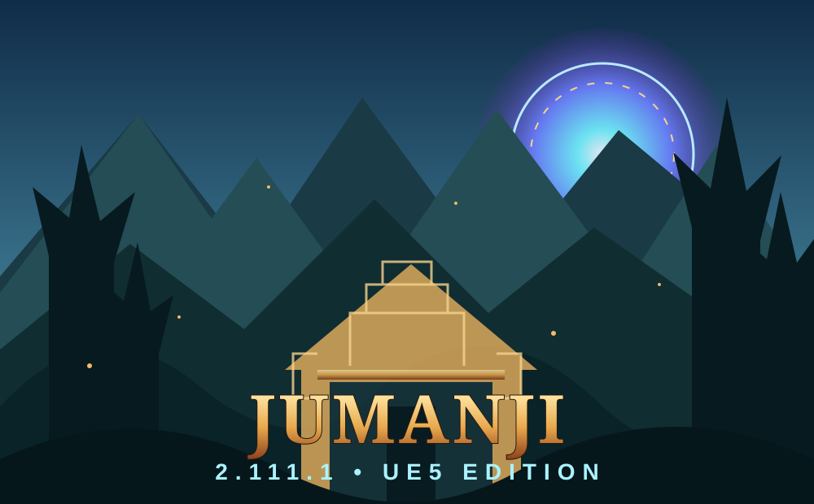

DŻUNGLA JUMANJI
Świątynie pochłonięte przez roślinność i ścieżki, które zmieniają się wraz z odkryciami.
PROJEKT GRY • PIERWSZA ZAPOWIEDŹ
UNREAL ENGINE 5 • EDITION
Dziewięciu bohaterów. Sześć niezwykłych krain. Jedna przygoda, której granice wyznacza tylko wyobraźnia.
To zapowiedź projektu koncepcyjnego. Zakres funkcji i platform może ulec zmianie.

THE WORLD01 / UNIWERSUM
Od tropikalnych ostępów po mroźne szczyty — każda kraina skrywa własne sekrety, wyzwania i ślady dawnych cywilizacji.
Świątynie pochłonięte przez roślinność i ścieżki, które zmieniają się wraz z odkryciami.
Surowy krajobraz, pradawne konstrukcje i próby wymagające odwagi oraz współpracy.
Mroźne przełęcze, ukryte ruiny i tajemnice skute wiecznym lodem.
Technologiczny azyl, w którym spotykają się różne kultury i wątki opowieści.
Zatopione komnaty, starożytne mechanizmy i ślady zapomnianej historii.
Bezkresne wydmy, monumentalne budowle i sekrety ukryte pod piaskiem.
02 / DRUŻYNA
Poznaj wstępny skład drużyny. Każda postać ma własną osobowość i rolę w zespole. Szczegółowe karty bohaterów powstaną w kolejnych etapach projektu.
03 / KIERUNEK ROZGRYWKI
Założenia projektu łączą eksplorację, rozwój bohaterów i wspólne wyzwania w rozległym uniwersum.
Odkrywaj regiony, sekretne miejsca i ścieżki prowadzące do nowych historii.
Poznaj zadania fabularne, zagadki środowiskowe i wyprawy o różnym poziomie trudności.
Rozwijaj umiejętności, wyposażenie i specjalizacje, aby stworzyć własny styl gry.
Projektowany kierunek rozgrywki zakłada wspólne wyprawy i działania drużynowe.
04 / ŚLEDŹ ROZWÓJ
Obserwuj repozytorium, aby poznawać kolejne etapy prac nad JUMANJI 2.111.1.
PRZEJDŹ DO GITHUB ↗